Wrap-up · Lecture 1 decoder
Lecture 1 decoder
Lecture 1, “Next Generation Statistical Methods for Genome-Wide Association Studies: Course Overview and Intro” (9 September 2026, 124 slides), covers a lot of ground quickly. This page maps every slide to the section of this site that explains it. Use it as a checklist before the lecture and to look things up during and after it.
Open the source lecture slides (PDF) to follow along with the decoder.
How to use this page Core
Lecture 1 is the first session of a nine-session course, the Statistical Genetics Workshop of the Division of Cancer Epidemiology and Genetics (DCEG) at the US National Cancer Institute.1,2 Its 124 slides fall into five blocks (figure below). Each block on this page has thumbnails of its key slides (click one to enlarge it), a summary in plain words, the terms you will hear, the sections of this site to read first, and a slide-by-slide table.
- Before the lecture: read the five summaries, skim the notation cheat sheet and try the ten questions. If you can answer them, you are ready.
- During and after the lecture: type a slide number into the finder below, or click a block in the figure.
- Before the practical: read the practical, decoded, which explains why each quality-control step works.
Course format and the nine sessions Core
Slides 1–9 and 44–55
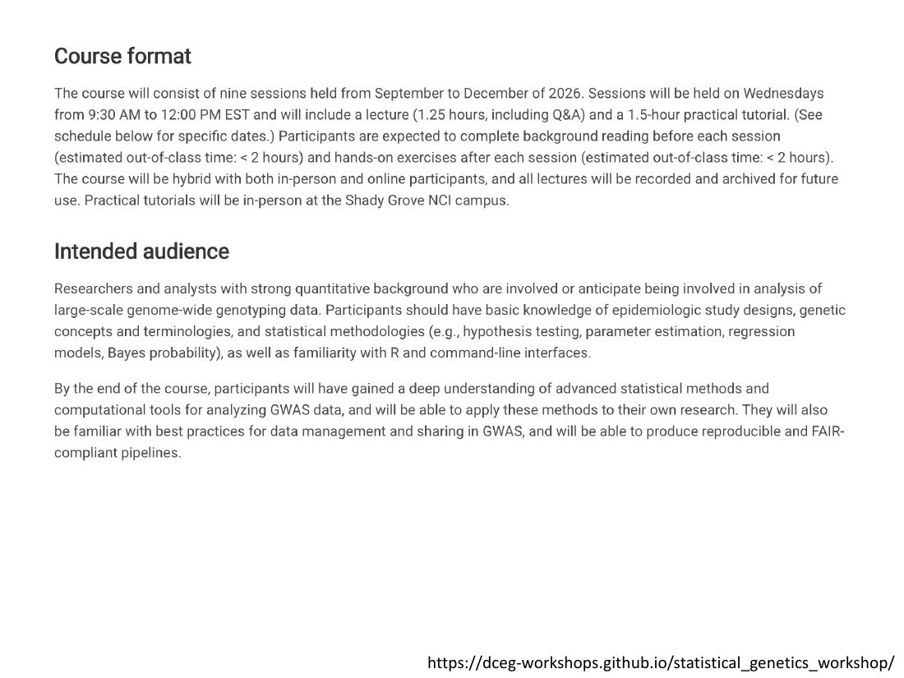
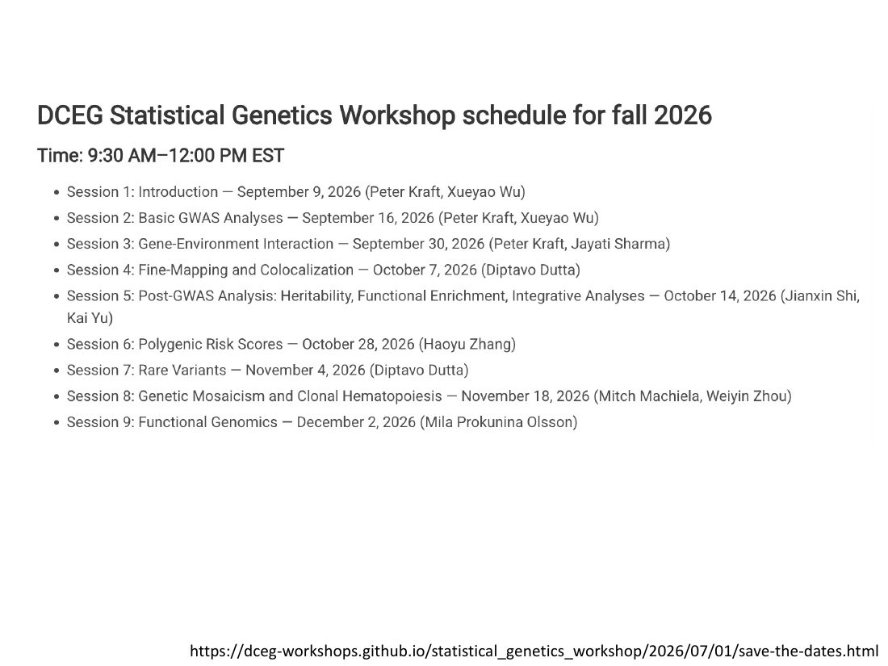

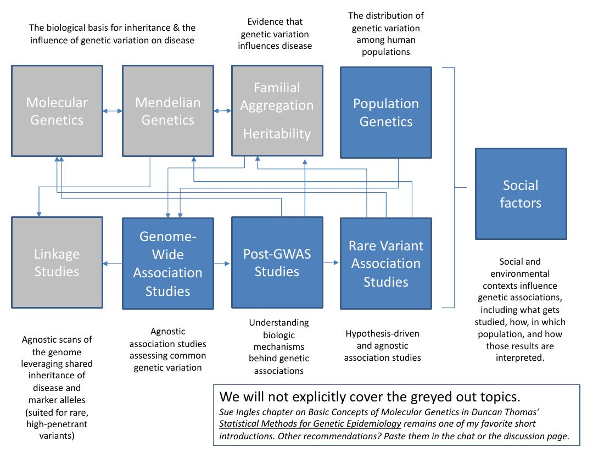
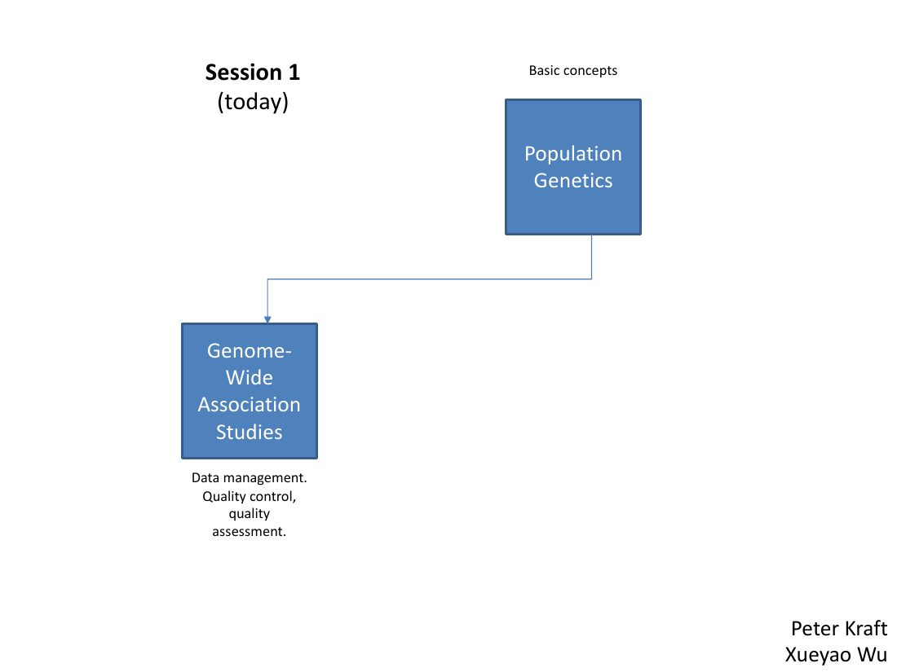
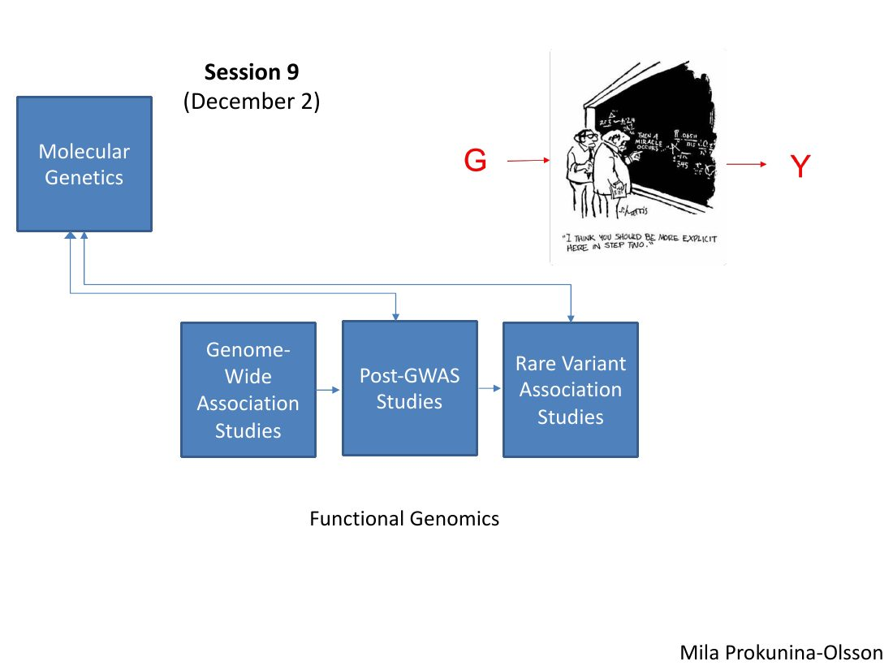
In plain words
Session 1 is this lecture plus a hands-on practical. Each of the nine sessions, from September to December 2026, has a lecture of about 1.25 hours and a practical of about 1.5 hours, with up to 2 hours of reading before and of exercises after (slide 5).1,2 Slides 45–54 place every session on the field map of slide 29: all nine build on genome-wide association studies (GWAS), and Session 1 adds the basics of population genetics and the data management and quality control (QC) that come before any association test.
Terms you will hear
GWAS · quality control · PLINK · gene–environment interaction · population descriptors · fine-mapping · colocalization · heritability · TWAS · polygenic risk scores · rare variants · genetic mosaicism · clonal hematopoiesis · functional genomics
Read first
- What a GWAS does p. 9 — the analysis every session builds on: one regression per variant, repeated for millions of variants.
- GWAS output: summary statistics, Manhattan and QQ plots p. 13 — what Session 2 produces and how it is plotted.
- Quality control: checking rows and columns against biology p. 11 — the subject of the Session 1 practical.
- Roadmap of this site — which page prepares you for which part of the course.
| Session | Topic | Biology it relies on | Read here |
|---|---|---|---|
| 1 · 9 Sep | Introduction: basic concepts of population genetics; GWAS data management, quality control and quality assessment (slide 46) | SNPs, alleles and genotypes; allele frequencies and Hardy–Weinberg equilibrium; linkage disequilibrium; relatedness; genetic similarity | Genotypes p. 4; IBD p. 5; HWE p. 6; LD p. 7; PCA p. 8; QC p. 11 |
| 2 · 16 Sep | Basic GWAS analyses: association testing, meta-analysis, visualization, annotation of results (slide 47) | A genotype as a 0/1/2 count in a regression; imputation; LD and association peaks; genome builds and gene annotation | One variant's effect p. 9; LD in GWAS p. 7; Imputation p. 11; GWAS output p. 13; Genome builds p. 2 |
| 3 · 30 Sep | Gene–environment interaction and population descriptors (slide 48) | How genotype and environment combine; how populations are described, and confounding by ancestry | Genes and environment p. 9; Population descriptors, stratification p. 8 |
| 4 · 7 Oct | Fine-mapping and colocalization: methods to prioritize likely causal variants (slide 49) | LD between a causal variant and its neighbors; regulatory variants and eQTLs | Association peaks p. 7; Gene regulation, eQTLs p. 3 |
| 5 · 14 Oct | Post-GWAS analysis: heritability, functional enrichment and integrative analyses such as TWAS (slide 50) | Heritability; LD scores; gene regulation and expression | Heritability p. 9; LD scores p. 7; eQTLs and TWAS p. 3 |
| 6 · 28 Oct | Polygenic risk scores: predicting future or latent trait values (slide 51) | Polygenic genetic architecture; allele frequencies and LD that differ across ancestries | Genetic architecture, polygenic scores p. 9; LD across ancestries p. 7 |
| 7 · 4 Nov | Rare variants (slide 52) | The allele frequency spectrum; sequencing; loss-of-function variants; linkage in families | Frequency spectrum p. 6; Loss of function p. 4; Linkage analysis p. 5; Sequencing p. 11 |
| 8 · 18 Nov | Genetic mosaicism and clonal hematopoiesis (slide 53) | Germline versus somatic mutations; copy number read from array intensities | Germline and somatic cells p. 1; LRR and BAF p. 11 |
| 9 · 2 Dec | Functional genomics (slide 54) | Transcription, gene regulation, chromatin and expression: what happens between genotype and trait | Transcription, regulation, measuring expression p. 3 |
Slide by slide
| Slides | On the slide | Read here |
|---|---|---|
| 1 | Title slide, 9 September 2026. | What a GWAS does p. 9 |
| 2–3 | Agenda: course format, introduction to genetic epidemiology, course scope, a few basic definitions. The agenda returns on slides 10, 44 and 64 to open each block. | The figure at the top of this page |
| 4–5 | Course website and format: nine Wednesday sessions, each a 1.25-hour lecture and a 1.5-hour practical, with reading before and exercises after; hybrid and recorded. Participants are expected to know epidemiologic study designs, basic genetic terms, statistics (testing, estimation, regression, Bayes) and R and the command line. | Epidemiology in five ideas p. 10 |
| 6 | Schedule of the nine sessions, with dates and instructors. | Session table above |
| 7 | Session 1 web page: topics (why genetic epidemiology; why GWAS and rare-variant association studies, RVAS; what has been learned; what remains) and readings: Uffelmann et al. 2021 (a GWAS primer), Penney et al. 2017 (genetic epidemiology of cancer) and Visscher et al. 2017 (ten years of GWAS discoveries). UpdateThe screenshot shows an earlier version of the page (see slide 8). | Learn more (two of the readings) |
| 8 | Session 1 practical: quality control of GWAS data with PLINK. UpdateThe screenshot shows an earlier version that used Google Colab and assigned ancestry with GrafPop. The current practical runs in RStudio on Biowulf, the NIH high-performance computing cluster, with PLINK 1.9 and GrafAnc.3 | The practical, decoded; QC p. 11 |
| 9, 43, 55 | Pauses for questions: “Questions?”, “Preguntas?”, “Fragen?”. | — |
| 45 | Course scope: the field map with molecular genetics, Mendelian genetics, familial aggregation and heritability, and linkage studies grayed out (“We will not explicitly cover the greyed out topics”). Recommends Sue Ingles' chapter on basic concepts of molecular genetics in Duncan Thomas' book Statistical Methods in Genetic Epidemiology. | The field map, annotated; Books |
| 46–54 | One slide per session, each highlighting the boxes of the field map that the session covers. | Session table above |
Introduction to genetic epidemiology Core
Slides 10–43

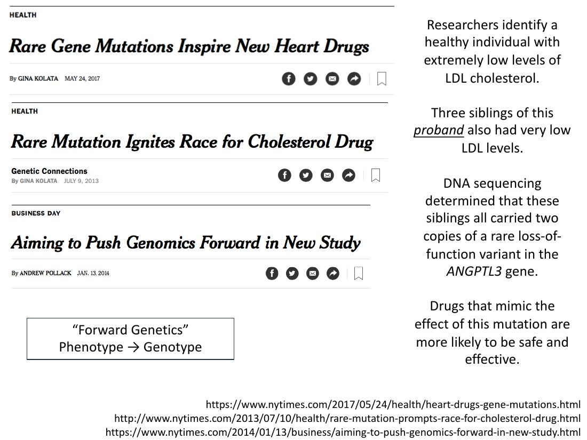
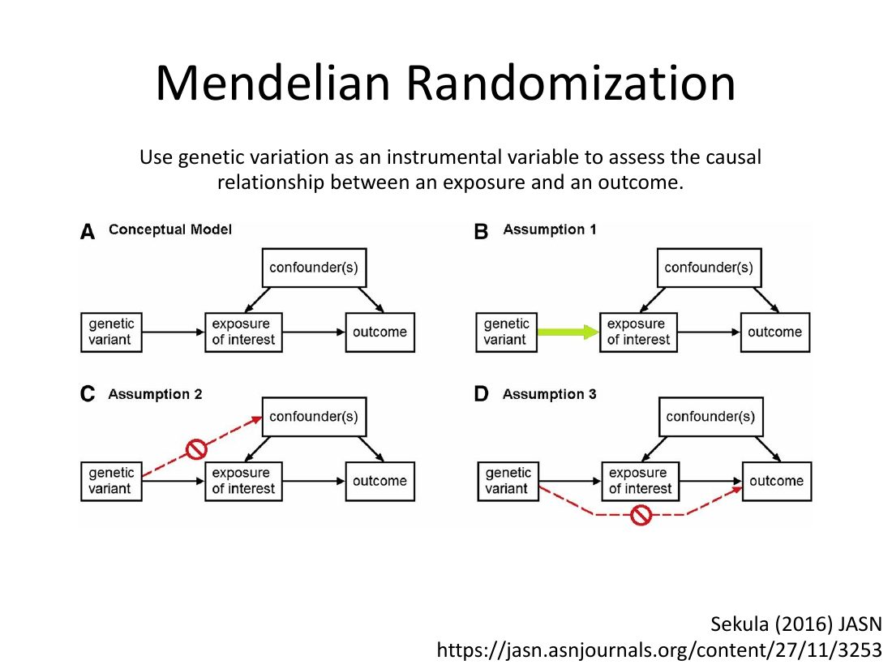
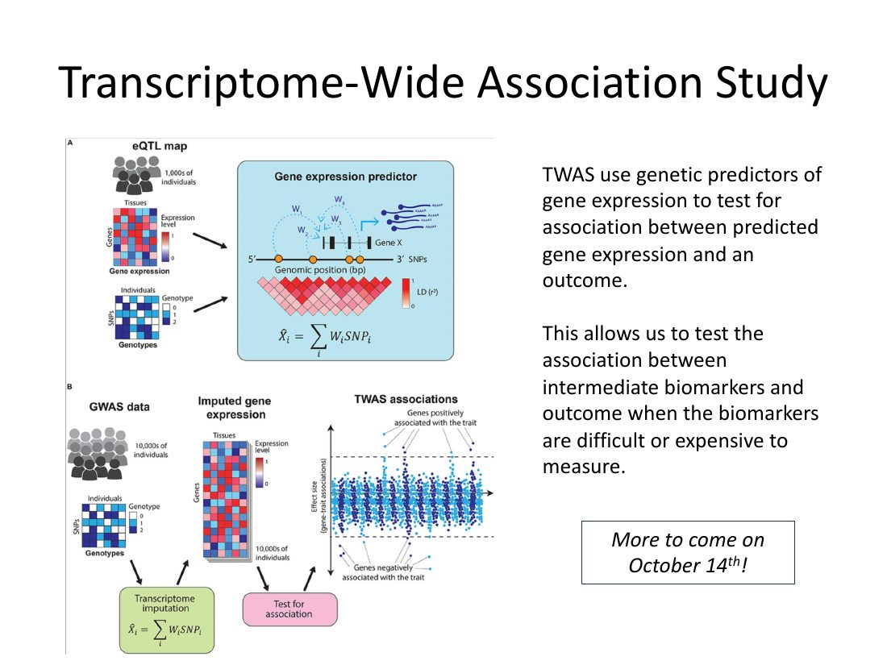
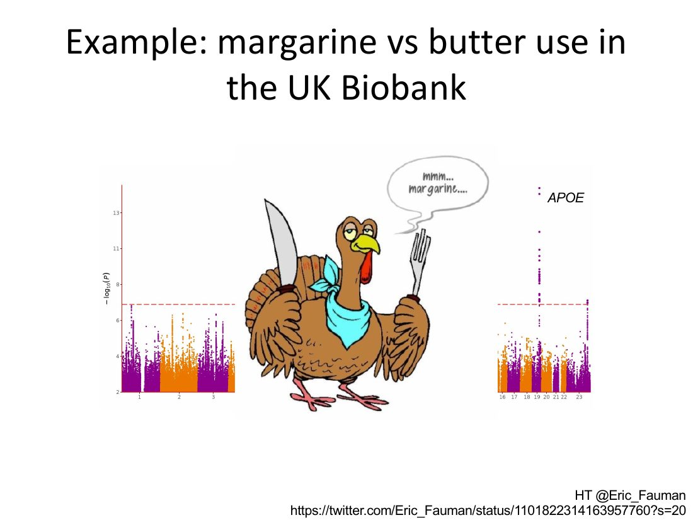
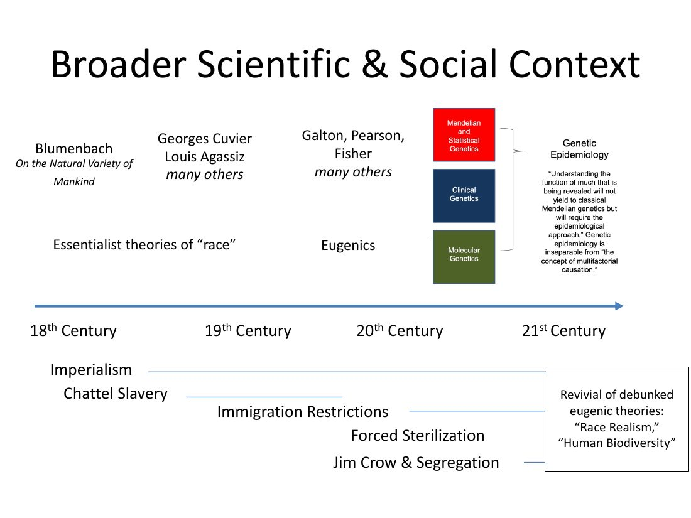
In plain words
Epidemiology studies how health and disease are distributed in populations and what determines them; genetic epidemiology studies the genetic determinants, in families and populations, and how they interact with social and environmental factors (slide 11). Slides 12–25 show what the field has delivered: drug targets found through families and rare variants (ANGPTL3, PCSK9), a GWAS finding that led to a therapy (BCL11A), genetic screening, and methods that use genotypes as research tools (Mendelian randomization and TWAS). Slides 26–30 sketch the history of the field and a map of its subfields, and slides 31–42 show how social context shapes genetic results: a diet “association” that runs through medical care, the lack of diversity in GWAS samples, and the field's historical ties to eugenics.
Terms you will hear
epidemiology · genetic epidemiology · forward genetics · reverse genetics · proband · loss-of-function · LDL cholesterol · fetal hemoglobin (HbF) · polygenic risk score (PRS) · Mendelian randomization · instrumental variable · TWAS · eQTL · familial aggregation · linkage studies · rare variant association studies · Manhattan plot · confounding · eugenics · race
Read first
- Epidemiology in five ideas p. 10 — populations and samples, exposure and outcome, cohort and case–control designs, prevalence and incidence, confounding (slide 11).
- From a variant to a medicine: forward and reverse genetics p. 9 — the PCSK9, ANGPTL3 and BCL11A stories of slides 15–17.
- Mendelian randomization p. 9 — why a genotype can act as an instrumental variable, with the HDL cholesterol example of slide 23.
- Measuring gene expression: RNA-seq, eQTLs and TWAS p. 3 — how a TWAS predicts expression from genotypes (slide 25).
- Association is not causation p. 9 — the margarine example of slides 31–35, step by step.
- Diversity in genetic studies and Words matter: population descriptors p. 8 — who is in GWAS (slide 37) and the history behind careful descriptors (slides 39–42).
The field map of slide 29, annotated
Slide 29 is a map of genetic epidemiology that the course returns to again and again: slide 45 uses it to show what the course covers, and slides 46–54 highlight the boxes each session uses. In the version below, every box links to the page of this site that explains its biology.
| Box | What it means | Sessions | Read here |
|---|---|---|---|
| Molecular genetics | How DNA, genes and gene regulation work, and how a variant changes what a molecule does: the biological basis of inheritance. | 3, 9 | DNA p. 2; transcription, regulation p. 3; what variants do p. 4 |
| Mendelian genetics | How alleles pass from parents to children, and how one variant in one gene can cause disease. | none | Mendel's laws, single-gene inheritance p. 5 |
| Familial aggregation, heritability | Evidence that genetic variation influences disease: diseases cluster in families, and twin and family studies estimate how much of the variation in a trait is genetic. | none as a box; SNP-heritability is part of Session 5 | Heritability p. 9; twins and families p. 5 |
| Population genetics | How allele frequencies and LD differ among human populations, and the history that produced the differences. | 1, 7 | Allele frequencies p. 6; LD patterns p. 7; population history p. 8 |
| Linkage studies | Genome scans in families: affected relatives share stretches of DNA inherited from a common ancestor around a disease variant. Best for rare variants with large effects (“high-penetrant”). | 7 | Linkage analysis, identity by descent p. 5 |
| Genome-wide association studies | Tests of common variants across the whole genome, one variant at a time, for association with a trait, without a prior candidate gene (“agnostic”). | 1–9 | What a GWAS does p. 9; LD in GWAS p. 7; GWAS output p. 13 |
| Post-GWAS studies | Working out which variant and gene explain an association and how: fine-mapping, colocalization, heritability and enrichment, TWAS, polygenic scores, Mendelian randomization. | 3–9 | Association peaks p. 7; eQTLs and TWAS p. 3; polygenic scores, Mendelian randomization p. 9 |
| Rare variant association studies | Tests of variants too rare to test one at a time, usually found by sequencing and often grouped by gene; “hypothesis-driven” when the variants or genes are chosen in advance. | 7–9 | Frequency spectrum p. 6; loss of function p. 4; sequencing p. 11 |
| Social factors | Social and environmental context shapes genetic associations: what is studied, how, in whom, and how results are interpreted. | 3 | Population descriptors, diversity p. 8; association and causation p. 9; who is in UK Biobank p. 10 |
Slide by slide
| Slides | On the slide | Read here |
|---|---|---|
| 11 | Definitions. Epidemiology: “the study of the distribution and determinants of health-related states in specified populations, and the application of this study to control health problems”. Genetic epidemiology: the role of genetic factors “in families and in populations”, and their interplay with social and environmental factors. | Epidemiology in five ideas p. 10 |
| 12–14 | “How can genetic epidemiology improve human health?” Two answers: a deeper understanding of disease biology that leads to new medicines, and direct clinical and public-health uses. The same bullets return on slides 18 and 21 (“But wait, there's more!”). | From a variant to a medicine p. 9 |
| 15 | Forward genetics (phenotype → genotype): a healthy person with very low LDL cholesterol, three siblings with the same, and loss-of-function variants in ANGPTL3; drugs that mimic such variants are more likely to be safe and effective. UpdateThe slide says the siblings “carried two copies” of one variant; the family studied carried two different loss-of-function variants, one on each copy of the gene.4 | ANGPTL3 and BCL11A p. 9; a family story p. 5 |
| 16 | Reverse genetics (genotype → phenotype): variation in PCSK9 affects LDL cholesterol, and screening finds a healthy person with extremely low LDL and no working PCSK9. UpdateThe slide says “homozygous”; the closest documented case carried two different inactivating variants, one on each copy.5 | PCSK9: from families to drugs p. 9 |
| 17 | A GWAS of fetal hemoglobin (HbF) finds a SNP at BCL11A; silencing BCL11A prevents sickle cell disease in mice; trials “are now underway”. UpdateThe SNP (rs1427407) lies inside BCL11A, in an intron that contains an enhancer active in red-cell precursors, rather than near the gene. A gene-editing therapy that disrupts this enhancer (exa-cel) was approved in the US in December 2023.6–8 | Fetal hemoglobin and BCL11A p. 3; GWAS to therapy p. 9 |
| 19 | Genetics in public health: predictive screening for rare high-risk variants (BRCA1, BRCA2, Lynch syndrome) and diagnostic newborn screening (29 conditions recommended by the American College of Medical Genetics, among them phenylketonuria, cystic fibrosis and hemoglobinopathies). | Single-gene inheritance p. 5; Heritability (phenylketonuria) p. 9 |
| 20 | Risk-stratified breast cancer screening that combines questionnaire risk factors, mammographic density, a polygenic risk score, family history and rare variants. | Polygenic scores p. 9 |
| 22 | Mendelian randomization: genetic variants as instrumental variables to test whether an exposure causes an outcome, with its three assumptions drawn as a diagram (Sekula et al. 2016).15 | Mendelian randomization p. 9; why genotypes are special variables p. 5 |
| 23 | Mendelian randomization suggests that C-reactive protein (CRP) and HDL cholesterol do not cause coronary heart disease, consistent with clinical trials. Note“HLD” on the slide means HDL.9 | Mendelian randomization p. 9 |
| 24 | A two-minute video introduction to Mendelian randomization that “glosses over some important pesky details”. | The three assumptions p. 9 |
| 25 | Transcriptome-wide association study (TWAS): genetic predictors of gene expression are used to test predicted expression against an outcome, useful when the intermediate is hard to measure; “More to come on October 14th!” (Session 5). | eQTLs and TWAS p. 3 |
| 26–28 | Genetic epidemiology is transdisciplinary. Its history runs from Mendel's discrete traits and the continuous traits of Galton and Pearson, through the synthesis of Fisher, Wright and Haldane, to molecular biology and the Human Genome Project; Neel (1984) ties the field to “the concept of multifactorial causation”. | Genetic architecture p. 9; Mendel's laws p. 5 |
| 29 | The field map: eight subfields in two rows, plus social factors. | The field map, annotated |
| 30, 36, 38 | The field map again, each time with part of the “Social factors” caption in red. Each part introduces an example: social and environmental contexts influence genetic associations (30, then margarine); “what gets studied, how, in which population” (36, then diversity); “how those results are interpreted” (38, then history). | Social factors box |
| 31–35 | Margarine versus butter in UK Biobank: a GWAS of spread type has peaks at APOE and LPA. Alleles that raise LDL cholesterol, statin use or the risk of myocardial infarction (MI, heart attack) raise margarine use. Take-home messages: “Social context matters”; “Hypothesized biological mechanisms should be concrete & testable”. | Association is not causation p. 9; Manhattan plots p. 13 |
| 37 | Lack of representation: most GWAS participants have been of European ancestry. Studies of a broader range of ancestries find new disease-related variants, sharpen fine-mapping and make polygenic risk models more generalizable (Martin et al. 2019).16 | Diversity in genetic studies p. 8; Polygenic scores p. 9 |
| 39–41 | The history of the field includes “prevailing ideas explaining and justifying social hierarchy”: essentialist theories of race (Blumenbach), eugenics (Galton, Pearson, Fisher), and the policies they supported, such as forced sterilization and immigration restrictions. Eugenics “was firmly within the Western scientific establishment”. | Words matter: population descriptors p. 8 |
| 42 | A 2022 Nature comment by Carlson and colleagues on extremists' misuse of genetics research, next to the 2023 National Academies report on population descriptors.17 | Population descriptors p. 8 |
Molecular genetics Core
Slides 56–63

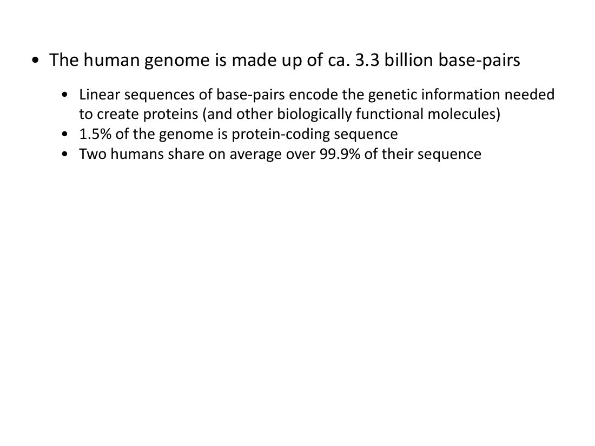


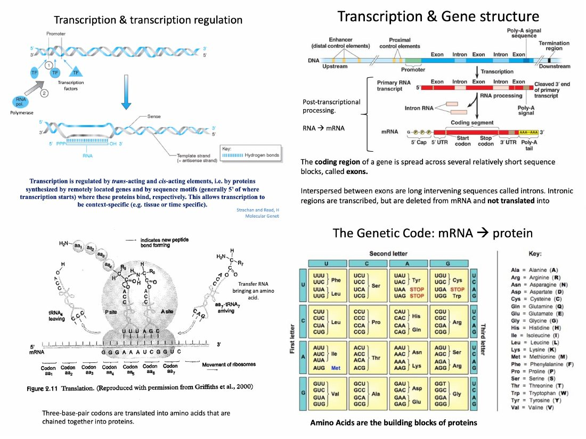

In plain words
A short refresher on the molecules. DNA is two complementary strands built from four bases, read from the 5′ end to the 3′ end (slide 57). One copy of the human genome is about 3 billion base pairs long and is split into 23 chromosomes; each body cell carries two copies, 46 chromosomes in all (slides 58–60). Genes are transcribed into RNA and translated into protein under the control of regulatory sequences (slides 61–62), and a variant can change the protein itself or when, where and how much of it is made (slide 63).
Terms you will hear
double helix · base pair · complementary · 5′ and 3′ ends · reverse complement · autosome · sex chromosome · karyotype · cytoband · p and q arms · central dogma · transcription · translation · exon · intron · codon · promoter · enhancer · nonsense · missense · synonymous · splice site · UTR · methylation
Read first
- Base pairing and the double helix and Direction: 5′ and 3′ ends p. 2 — the four bases, A–T and C–G pairs, and why each strand is the reverse complement of the other (slide 57).
- The human genome by the numbers p. 1 — genome size and chromosome lengths, with current values for slides 58–59.
- Karyotypes and the anatomy of a chromosome p. 1 — chromosome arms and cytobands such as 8q24 (slide 60).
- Transcription and Gene anatomy p. 3 — from gene to RNA to protein, exons and introns (slides 61–62).
- What variants do p. 4 — coding and non-coding variants and their effects (slide 63).
Slide by slide
| Slides | On the slide | Read here |
|---|---|---|
| 56 | Block title: “Molecular Genetics”. | — |
| 57 | DNA: a sugar–phosphate backbone, four bases (A, C, G, T), hydrogen bonds between A–T and C–G pairs, and sequence read or copied from 5′ to 3′. “Antisense (mirror image) copies” means that each strand is the reverse complement of the other. | Base pairing, direction p. 2 |
| 58 | The genome is “ca. 3.3 billion base-pairs”; 1.5% of it is protein-coding sequence; two people share on average over 99.9% of their sequence. UpdateThe GRCh38 reference has about 3.1 billion base pairs per set of chromosomes (3,099,734,149 bp), and the gap-free T2T-CHM13 sequence 3.055 billion without a Y chromosome; protein-coding sequence covers about 1.1–1.2% of GRCh38.10–12 | Genome by the numbers p. 1; What a gene is p. 3; How different are two genomes? p. 4 |
| 59 | 46 chromosomes: 22 pairs of autosomes and one pair of sex chromosomes, each a single DNA molecule from 50 million base pairs (chromosome 22) to 245 million (chromosome 1), about 125 million on average. UpdateIn GRCh38 the shortest chromosome is 21 (46.7 Mb; chromosome 22 is 50.8 Mb), chromosome 1 is 249.0 Mb and the mean autosome is 130.7 Mb (1 Mb = 1 million base pairs).10 | Genome by the numbers, two sets p. 1 |
| 60 | A human karyotype. Cytobands such as 1p12 and 8q24 (read “eight q two four”) name locations; p is the short arm and q the long arm. In the nucleus, chromosomes are usually unwound rather than compact. | Karyotypes, packaging p. 1 |
| 61 | The central dogma: DNA is copied (replication), transcribed into RNA in the nucleus, and translated into protein by ribosomes in the cytoplasm. Changes in coding and non-coding sequence can both affect molecular function. | Transcription, translation p. 3 |
| 62 | Four panels: transcription and its regulation by cis- and trans-acting elements; gene structure (enhancer, promoter, exons, introns, UTRs, poly-A tail); translation by ribosomes and transfer RNAs; the genetic code. | Regulation, gene anatomy, genetic code p. 3 |
| 63 | How DNA changes can alter function: coding changes (nonsense, missense, synonymous), regulatory changes (promoter, enhancer, splice site, 5′ or 3′ UTR) and structural changes (chromatin, methylation). Animal studies suggest that fewer than half of disease-causing loci are coding changes. | What variants do p. 4; Gene regulation p. 3 |
A few basic definitions Core
Slides 64–106


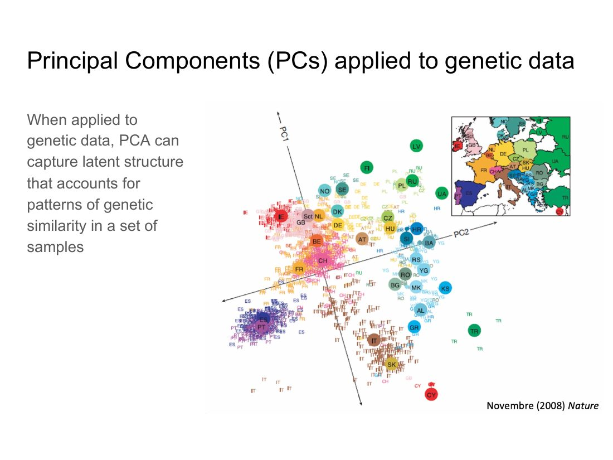
In plain words
This block holds most of the concepts Session 1 uses. A SNP is a position where people differ by one base, almost always with two alleles; which allele is the reference and which DNA strand the letters come from must be stated (slides 65–69). Counting genotypes gives genotype and allele frequencies, and Hardy–Weinberg equilibrium (HWE) predicts genotype frequencies from allele frequencies (slides 70–83). Linkage disequilibrium (LD) is the correlation between alleles at nearby SNPs and decays with distance (slides 84–86). Allele frequencies and LD differ between populations, most of all between African and other populations, and these differences let STRUCTURE and principal component analysis (PCA) place people by genetic similarity (slides 87–105).
Terms you will hear
SNP · allele · reference allele · strand · strand ambiguous · refSNP (rs) number · GRCh38/hg38 · ABO blood group · codominant · genotype frequency · allele frequency · MAF · heterozygosity · Hardy–Weinberg equilibrium · random mating · linkage disequilibrium · r² · allele frequency spectrum · cline · out of Africa · genetic drift · founder effect · selection · HapMap · 1000 Genomes · STRUCTURE · PCA · genetic similarity
Read first
- Loci, alleles and genotypes and The allele-label zoo p. 4 — why a genotype is a count, and reference, alternative, minor and effect alleles (slides 67, 71, 78).
- Strands in SNP data p. 2 — why one SNP can be “C/T” or “G/A”, and which SNPs are strand-ambiguous (slides 68–69).
- Counting genotypes and alleles p. 6 — the notation of slides 72–79 worked on the ABO and MTHFR counts.
- Hardy–Weinberg equilibrium and Testing HWE p. 6 — the formula, its assumptions and how deviations are used in QC (slides 80–83).
- How LD arises and LD varies along the genome and between populations p. 7 — slides 84–86 and 94–96.
- Why allele frequencies differ between populations p. 6 — drift, founder effects, selection and gene flow (slides 87–93, 97).
- Measuring genetic similarity with PCA and STRUCTURE, ADMIXTURE and GrafAnc p. 8 — what the methods of slides 98–105 measure, and what they do not.
Slide by slide
| Slides | On the slide | Read here |
|---|---|---|
| Single nucleotide polymorphisms · slides 65–69 | ||
| 65–66 | The list of definitions to come: SNPs; genotype and allele frequencies (heterozygosity); Hardy–Weinberg equilibrium; linkage disequilibrium; variation in allele frequencies and LD. | This block |
| 67 | A SNP drawn on two DNA molecules: one position, with a reference allele on one and another (variant) allele on the other, labeled B and b. | Genotypes, allele labels p. 4 |
| 68 | SNPs almost always have two alleles. The same SNP can be written “C/T” or “G/A”, so the strand must be stated, usually the + strand of the reference genome GRCh38; rs671 and chr12:111803962:G:A name the same variant. UpdateThe paper cited for strand nomenclature (Nelson et al.) was published in Trends in Genetics in 2012, not 2020.13 | Strands in SNP data, genome builds p. 2; Naming variants p. 4 |
| 69 | Two invented examples. For a G/T SNP, two studies that report opposite strands (G/T and C/A) are easy to reconcile. For a C/G SNP, the other strand also reads C/G, so the same result can look reversed: C/G and A/T SNPs are “strand ambiguous”. | Strand-ambiguous SNPs p. 2 |
| Genotype and allele frequencies · slides 70–79 | ||
| 70–71 | Definitions: an allele is the sequence at a polymorphic locus; a person carries at most two alleles, but a population can carry more; the pair a person carries is their genotype. Example: the ABO blood group, whose alleles A and B are codominant with each other and dominant over O. | Genotypes, more than two alleles p. 4; dominance p. 5 |
| 72 | Notation: K alleles; nij people with genotype ij; genotype frequency Pij = nij/n. | Counting p. 6; notation cheat sheet |
| 73 | ABO genotype counts and frequencies for 3,117 people (for example 1,168 OO). | Counting p. 6 |
| 74 | MTHFR C677T (rs1801133): two alleles that encode different amino acids in an enzyme relevant to chemotherapy with 5-fluorouracil; 334 CC, 350 CT and 82 TT. | Counting p. 6; Naming variants p. 4 |
| 75–77 | Allele frequency pi = mi/m, with m = 2n chromosomes. ABO: pO = .61, pA = .29, pB = .10. MTHFR: pC = .66, pT = .34. | Counting p. 6 |
| 78 | For a diallelic SNP (K = 2), p and q replace p1 and p2; p usually refers to the minor allele, and MAF = p. You still have to say which allele p refers to. | p, q and the MAF p. 6; allele labels p. 4 |
| 79 | The “N”: for genotypes, the number of people; for alleles, the number of chromosome copies, twice the number of people for an autosome. | The N for genotypes and alleles p. 6 |
| Hardy–Weinberg equilibrium · slides 80–83 | ||
| 80–81 | HWE (Hardy and Weinberg, 1908) and its assumptions: random mating, infinite population size, discrete generations, equal allele frequencies in males and females, no mutation, migration or selection. It is often a good approximation even when they do not hold exactly. | Hardy–Weinberg equilibrium p. 6 |
| 82 | The formula: Pij = 2pipj for i ≠ j and pi2 for i = j; for a diallelic SNP, p2, 2pq, q2, a binomial distribution with parameters (2, p). | Hardy–Weinberg equilibrium p. 6 |
| 83 | Uses of HWE: testing for genotyping errors, simplifying calculations, testing the assumptions, and (with low power) case-only tests for some inheritance modes. | Testing HWE p. 6; variant QC p. 11 |
| Linkage disequilibrium · slides 84–86 | ||
| 84–85 | LD is the correlation between genetic markers in a population, usually measured by r2; a high r2 needs similar MAFs. Causes: mutation and recombination, selection, demography. Uses: counting independent tests, choosing a minimal set of SNPs that covers the rest, imputation. | How LD arises, r², LD in GWAS p. 7 |
| 86 | LD decays with distance: r between pairs of SNPs against physical distance in five regions (Pritchard and Przeworski 2001), with a dotted line at r = 0.316 (r2 = 0.1): pairs above it have what Kruglyak (1999) called “useful LD” for association studies.18 | LD patterns p. 7 |
| Variation in allele frequencies and LD · slides 87–97 | ||
| 87–88 | The allele frequency spectrum for SNPs in about 1,000 genes sequenced in 697 people: most SNPs are rare (MAF < 1%), but most differences between two people come from common variants (MAF > 5%). dbSNP records the SNPs seen in genetic studies. | The allele frequency spectrum p. 6 |
| 89–91 | Allele frequencies change smoothly with geography: the ABO B allele worldwide (slide 90) and blood group A within Japan (slide 91), both from Lewontin's Human Diversity (1995). Note“B allele frequency” on slide 90 is the frequency of the ABO B allele, not the B allele frequency (BAF) of genotyping arrays. | Why allele frequencies differ p. 6; BAF: LRR and BAF p. 11 |
| 92 | Allele frequencies of SNPs in targeted regions, compared between pairs of HapMap reference samples (CEU, YRI, CHB, JPT): they agree most closely between the Japanese and Han Chinese samples.19 | Reference samples p. 8; five populations p. 6 |
| 93 | “There is much greater variation, e.g. more SNPs, among African populations than others, consistent with out of Africa hypothesis”, with numbers of variants per genome by type (Abecasis, 2014). | Population history p. 8; Heterozygosity p. 6 |
| 94–96 | LD also differs between populations: mean D′ and r2 against distance in HapMap samples (slide 95) and r2 along the chromosomes (slide 96). LD decays fastest in the YRI (Yoruba) samples.19 | LD patterns p. 7 |
| 97 | Why allele frequencies and LD vary: drift; migration, isolation, bottlenecks and founder effects; selection; non-random mating; mutation. | Why allele frequencies differ p. 6; Population history p. 8 |
| Genetic similarity: STRUCTURE and PCA · slides 98–106 | ||
| 98 | These differences can place people on a map of genetic similarity, used in QC or as covariates against confounding. Model-based methods: STRUCTURE, GRAF-pop. Model-free: PCA. | PCA, stratification p. 8 |
| 99–101 | STRUCTURE estimates the share of each person's genome that “comes from” each of K ancestral populations; results on 1000 Genomes samples at K = 5, 6 and 7; “Don't overinterpret these proportions!” (Lawson et al. 2018).20 | STRUCTURE, ADMIXTURE and GrafAnc p. 8 |
| 102–103 | PCA summarizes many variables with a few; applied to genotypes, it captures structure, as in the PCA of Europeans that mirrors the map of Europe (Novembre et al. 2008).21 | PCA of genotypes p. 8 |
| 104–105 | Limitations: the Europe picture is “too pretty” by design, because people whose grandparents came from different countries were excluded; PCs only summarize the data at hand: who is in the data, and who is not? (Lewis et al. 2022).22 | PCA, population descriptors p. 8 |
| 106 | “Enough talk… on to hands-on practice!” | The practical, decoded |
Appendix: measures of LD Core
Slides 107–124
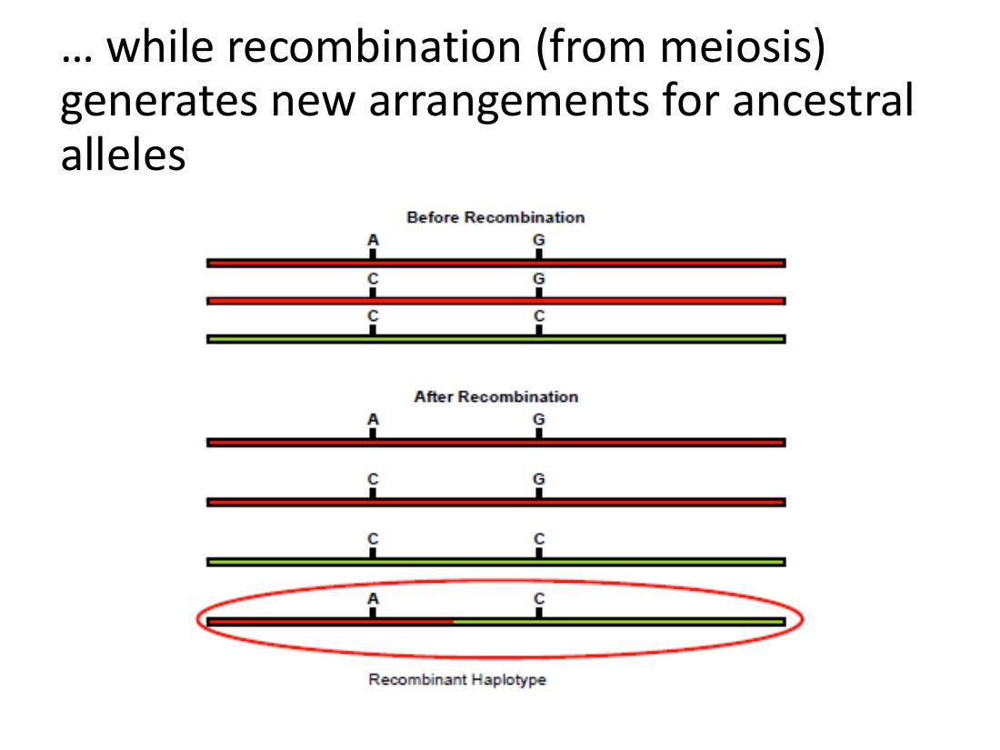
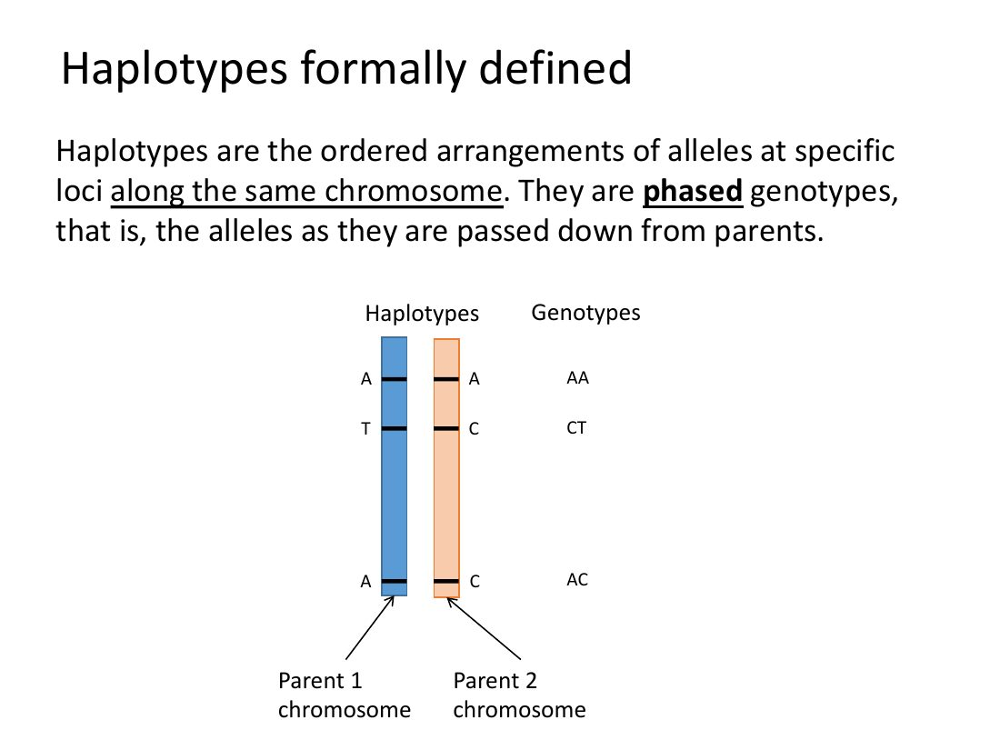
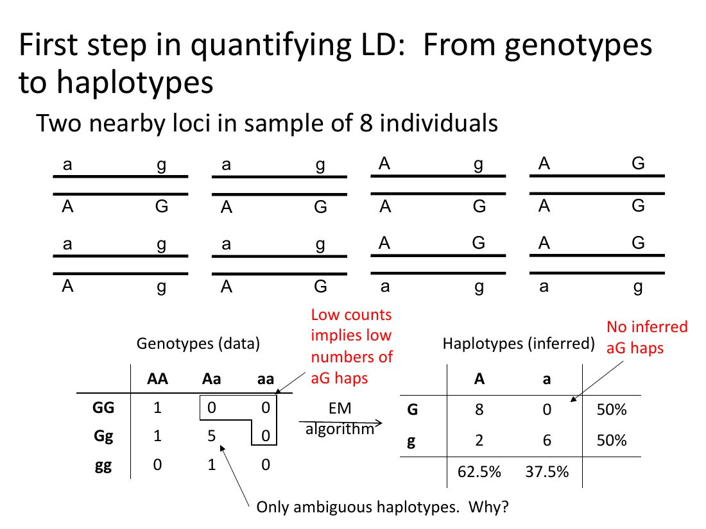

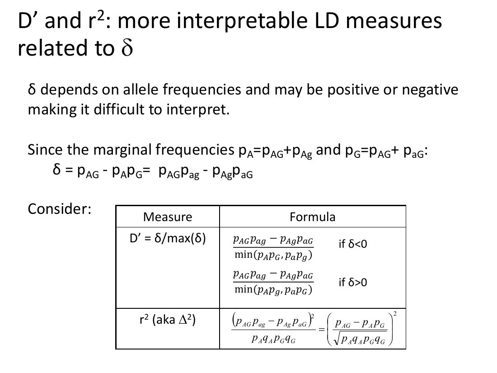
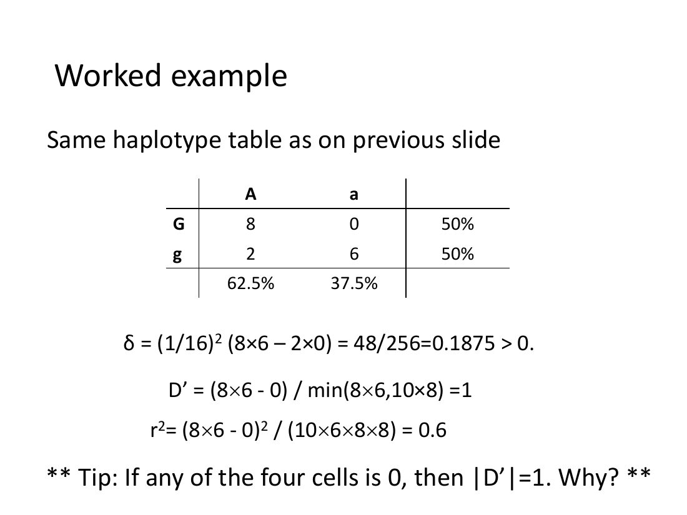
In plain words
The appendix derives the LD measures. Alleles at nearby loci stay associated because a new variant arises on one particular ancestral chromosome, and recombination breaks the association up only slowly over generations (slides 109–112). Genotypes do not show which alleles sit on the same chromosome copy, so haplotypes are usually inferred, for example with the expectation–maximization (EM) algorithm (slides 113–117). D measures how far a haplotype frequency departs from the product of its allele frequencies; D′ rescales D by its largest possible value, r2 turns it into a squared correlation, and slide 124 works one example (slides 118–124).
Terms you will hear
haplotype · phase · phasing · EM algorithm · recombination · recombination fraction θ · linkage · gametic disequilibrium · LD coefficient D · D′ · r²
Read first
- How LD arises and how recombination breaks it down p. 7 — slides 109–112 and the “gametic disequilibrium” of slide 115.
- Haplotypes and phase p. 7 — what phase is and how haplotype counts are inferred from genotypes (slides 113–117).
- Measuring LD: D, D′ and r² p. 7 — the formulas of slides 118–123, with an LD calculator.
- Worked example: Lecture 1, slide 124 p. 7 — every number on slide 124, computed step by step.
- Linkage, recombination and the genetic map p. 5 — the recombination fraction θ and why linked loci have θ < ½ (slide 115).
Slide by slide
| Slides | On the slide | Read here |
|---|---|---|
| 107–108 | Appendix title; part 1, haplotypes and their relationship to LD. | Haplotypes and phase p. 7 |
| 109–111 | Origins of LD: a mutation arises on one ancestral chromosome, later another mutation arises nearby, and recombination in meiosis creates new combinations of the ancestral alleles. | How LD arises p. 7; Meiosis p. 5 |
| 112 | “Chromosomes are mosaics of ancestral haplotypes”; the size of the conserved pieces depends on the recombination and mutation rates. | How LD arises p. 7 |
| 113 | Haplotypes are the ordered alleles at several loci along the same chromosome, that is, phased genotypes. | Haplotypes and phase p. 7 |
| 114 | Genotyping does not show phase. Long single-molecule reads can, but haplotypes are usually inferred, for example with the EM algorithm. | Haplotypes and phase p. 7; Phasing p. 11 |
| 115 | Strictly, LD combines two conditions: the alleles at two loci are not independent (“gametic disequilibrium”), and the loci are linked (recombination fraction θ < ½). For markers on the same chromosome the two terms are used interchangeably. | How LD arises p. 7; Linkage p. 5 |
| 116–117 | Part 2. From genotypes to haplotypes: 8 people at two nearby loci; only the 5 people heterozygous at both loci have ambiguous phase, and the EM algorithm infers 16 haplotypes: 8 AG, 2 Ag, 0 aG and 6 ag. | From genotype counts to haplotype counts p. 7 |
| 118 | δ (“also sometimes termed D”): each haplotype frequency is the product of its allele frequencies plus or minus δ, and the allele frequencies limit how large δ can be (δmin, δmax). | D: departure from independence p. 7 |
| 119 | Independence means Pr(A, G) = Pr(A) Pr(G); δ = Pr(A, G) − Pr(A) Pr(G), which is 0 when there is no LD. | D p. 7 |
| 120 | D′ divides δ (the same D) by its largest possible value given the allele frequencies; r2, also written Δ2, divides δ2 by the product of the four allele frequencies; qA and qG mean pa and pg. | D′, r² p. 7 |
| 121 | |D′| = 1 is taken as evidence of no recombination; r is the Pearson correlation between 0/1 allele codes at the two loci. NoteThe square-root sign drawn over the formula is not part of it: r = (1/N) Σ (Xi − X)(Yi − Y) / (σXσY), which can be negative; r2 is its square. | r²: the squared correlation p. 7 |
| 122 | |D′| and r2 measure different things: |D′| reflects recombination history and depends less on allele frequencies; r2 depends strongly on them, reaches 1 only when the two allele frequencies are equal, and is directly related to the power of association tests. Update“Delvin 1995 Genomics” is Devlin and Risch (1995), Genomics 29:311–322.14 | r², D′ p. 7 |
| 123 | The same formulas written with haplotype counts n11, n10, n01, n00 and their totals. Here n counts chromosome copies, not people. | Worked example p. 7; notation cheat sheet |
| 124 | Worked example (8 AG, 2 Ag, 0 aG, 6 ag): δ = 48/256 = 0.1875, D′ = 1, r2 = 0.6. Tip: if any of the four counts is 0, |D′| = 1. | Worked example: slide 124 p. 7 |
Notation cheat sheet Core
Lecture 1 uses two notations. For one SNP (slides 72–82), counts are of people: nij people have genotype ij. For two SNPs (slides 113–124), counts are of chromosome copies: n11 copies carry the haplotype AG. The figure applies both to the lecture's own examples; the tables then list every symbol with the section that explains it. Variables are in italics; subscripts name alleles (C, T, A, G) or indices (i, j).
One SNP: MTHFR C677T genotype counts (slides 74–82)
| genotype | CC | CT | TT | total |
|---|---|---|---|---|
| ij | 11 | 12 | 22 | |
| nij (people) | 334 | 350 | 82 | n = 766 |
| Pij = nij/n | 0.436 | 0.457 | 0.107 | 1 |
| expected under HWE | 0.442 | 0.446 | 0.113 | 1 |
- Allele counts: mC = 2 × 334 + 350 = 1,018; mT = 350 + 2 × 82 = 514; m = 2n = 1,532.
- Allele frequencies: pC = 1,018/1,532 = 0.664; pT = 0.336.
- HWE row: pC2, 2pCpT, pT2.
- T is the minor allele, so MAF = 0.336. Slide 77 numbers C as allele 1 (p1 = .66); slide 78's convention would instead call the minor allele's frequency p. Always check which allele p means.
Two SNPs: haplotype counts (slides 117–124)
| A | a | total | |
|---|---|---|---|
| G | n11 = 8 (AG) | n10 = 0 (aG) | n1• = 8 |
| g | n01 = 2 (Ag) | n00 = 6 (ag) | n0• = 8 |
| total | n•1 = 10 | n•0 = 6 | n = 16 |
- pA = 10/16 = 0.625; pG = 8/16 = 0.5; pAG = 8/16 = 0.5.
- D (δ on the slides) = pAG − pApG = 0.5 − 0.3125 = 0.1875, the same as (8 × 6 − 0 × 2)/162.
- D > 0, so D′ = D / min(pApg, papG) = 0.1875/0.1875 = 1.
- r2 = D2 / (pApapGpg) = 0.6, so r = 0.775.
- n = 16 counts chromosome copies (8 people × 2), not people.
| Symbol | Meaning | Slides | Explained in |
|---|---|---|---|
| −log10(P) | The y-axis of a Manhattan plot: 2 means P = 0.01, and 7.3 means P = 5 × 10−8. | 31 | Manhattan plots p. 13 |
| K | Number of distinct alleles at a locus in the population: 2 for a diallelic (biallelic) SNP, 3 for ABO (A, B, O). | 72, 78 | More than two alleles p. 4 |
| i, j | Allele labels 1 … K. Genotype ij has one copy of allele i and one of allele j; order does not matter, so nij and nji are the same people. | 72 | Counting p. 6 |
| nij, n | Number of people with genotype ij; n = Σ nij, the number of people. | 72–77 | Counting p. 6 |
| Pij | Genotype frequency, nij/n. | 72–74 | Counting p. 6 |
| mi, m | Number of copies of allele i; m = 2n, all allele copies at an autosomal locus. | 75 | Counting p. 6 |
| pi | Allele frequency: pi = mi/m = (2nii + Σj≠i nij)/(2n) = Pii + ½ Σj≠i Pij. | 75–77 | Counting p. 6 |
| p, q | For a diallelic SNP, p = p1 and q = p2 = 1 − p. By convention p is usually the minor allele's frequency, but say which allele it refers to. | 78, 82 | p, q and the MAF p. 6 |
| MAF | Minor allele frequency: the frequency of the less common allele, so MAF ≤ 0.5. Slide 88 calls SNPs with MAF < 1% rare and those with MAF > 5% common. | 78, 88 | MAF, frequency spectrum p. 6 |
| N | “The N”: for genotypes, the number of people; for alleles, the number of chromosome copies (2 × people for an autosome). | 79 | The N p. 6 |
| Pij = 2pipj; Pii = pi2 | Hardy–Weinberg genotype frequencies (i ≠ j, then i = j): a person's two alleles are two independent draws, Multinomial(2; p1, …, pK). | 82 | HWE p. 6 |
| P11 = p2, P12 = 2pq, P22 = q2 | The diallelic case: the number of copies of allele 1 is Binomial(2, p), from (p + q)2 = p2 + 2pq + q2. | 82 | HWE p. 6 |
| r, r2 | LD between two SNPs as a correlation (defined on slides 120–121). Slide 86 plots r against distance, with a line at r = 0.316, that is r2 = 0.1. | 85–86 | LD patterns p. 7 |
| K (STRUCTURE) | A different K: the number of ancestral populations a STRUCTURE model assumes. | 99–100 | STRUCTURE p. 8 |
| A, a; G, g | The two alleles at the first locus (A, a) and at the second (G, g). Upper and lower case are only labels here; they do not mean dominant and recessive. | 113–124 | Measuring LD p. 7 |
| θ | Recombination fraction: the probability that a gamete is recombinant between two loci. Linked loci have θ < ½; loci on different chromosomes have θ = ½. | 115 | Linkage p. 5; How LD arises p. 7 |
| pA, pa, pG, pg; qA, qG | Allele frequencies at the two loci, with pa = 1 − pA and pg = 1 − pG; slide 120 writes qA and qG for pa and pg. | 118–120 | Measuring LD p. 7 |
| pAG, pAg, paG, pag | Haplotype frequencies: the share of chromosome copies that carry both named alleles. | 117–121 | Measuring LD p. 7 |
| δ, D | One quantity, two names: the LD coefficient D = pAG − pApG = pAGpag − pAgpaG = Pr(A, G) − Pr(A) Pr(G). The slides write δ and note that it is “also sometimes termed D”; this site and most software write D. | 118–124 | D p. 7 |
| δmin, δmax | The most negative and most positive values D can take, given the allele frequencies: δmin = −min(pApG, papg) and δmax = min(pApg, papG). | 118, 120 | D′ p. 7 |
| D′ | D divided by the most extreme value of the same sign; |D′| runs from 0 to 1 and equals 1 when one of the four haplotypes is absent. | 120–124 | D′ p. 7 |
| r2, Δ2 | Squared correlation of the alleles at the two loci: r2 = D2/(pApapGpg). Slide 120 also calls it Δ2. | 85, 120–124 | r² p. 7 |
| r; Xi, Yi | Pearson correlation between allele codes on the same chromosome copy i: Xi = 0 for A and 1 for a, Yi = 0 for G and 1 for g; r = (1/N) Σ (Xi − X)(Yi − Y)/(σXσY), with N counting chromosome copies. The square-root sign drawn over this formula on the slide is not part of it. | 121 | r² p. 7 |
| n11, n10, n01, n00 | Haplotype counts. The first index is the G locus (1 = G, 0 = g), the second the A locus (1 = A, 0 = a): n11 = AG, n10 = aG, n01 = Ag, n00 = ag. | 123–124 | Worked example p. 7 |
| n1•, n0•, n•1, n•0, n | Row and column totals (• means summed over that index). Here n is the number of chromosome copies (16 on slide 124), not the number of people as on slide 72. | 123 | Worked example p. 7 |
| Symbol | Meaning | Where | Explained in |
|---|---|---|---|
| F_MISS | PLINK's missing-call rate: per variant in .lmiss, per person in .imiss. | Practical, step 1 | Sample QC p. 11 |
| P (HWE); ALL, AFF, UNAFF | Hardy–Weinberg exact-test P-value for each SNP, computed in all samples, in cases (AFF, affected) and in controls (UNAFF). | Step 2 | Testing HWE p. 6 |
| Z0, Z1, Z2 | For a pair of people, the estimated probabilities of sharing 0, 1 or 2 alleles identical by descent (IBD) at a locus. | Step 4 | Relatives in genotype data p. 5 |
| PI_HAT | Estimated proportion of the genome shared IBD, Z2 + ½ Z1: about 1 for duplicates or identical twins, 0.5 for parent and child or full siblings, 0.25 for second-degree relatives, 0.125 for first cousins.3 | Step 4 | Identity by descent p. 5 |
| O(HOM), E(HOM), N(NM) | For one person: observed number of homozygous genotypes, the number expected under HWE, and the number of non-missing genotypes. | Step 5 | Heterozygosity p. 6 |
| F | PLINK's inbreeding coefficient estimate, (O(HOM) − E(HOM))/(N(NM) − E(HOM)): near 0 as expected, positive with too few heterozygous genotypes, negative with too many. | Step 5 | Heterozygosity p. 6 |
| het_rate | The share of a person's genotypes that are heterozygous, (N(NM) − O(HOM))/N(NM). | Step 5 | Heterozygosity p. 6 |
| PC1, PC2, … | Principal components: each person's coordinates (.eigenvec); the eigenvalues (.eigenval) give the variance along each component. | Steps 6–7 | PCA p. 8 |
| GD1–GD3; Pe, Pf, Pa; AncGroupID | GrafAnc output: genetic-distance scores; components referenced to European, African and East Asian reference populations; an assigned group code whose first digit is the continental group (3 = EUR). | Step 8 | GrafAnc p. 8 |
| β (BETA), SE | Per-allele effect: the slope of the trait on the 0/1/2 allele count (a log odds ratio for a case–control trait), and its standard error. | Session 2 | One variant's effect p. 9 |
| OR | Odds ratio per allele, eβ, for a binary trait; OR = 1 means no effect. | Session 2 | One variant's effect p. 9 |
| P, LOG10P | The association P-value; REGENIE, the GWAS program of the Session 2 practical, reports it as LOG10P = −log10(P).2 | Session 2 | GWAS output p. 13 |
| 5 × 10−8 | Genome-wide significance: 0.05 divided by about one million effectively independent common-variant tests; −log10(5 × 10−8) ≈ 7.3. | Session 2 | The effective number of tests p. 7 |
| χ2, λ | The 1-degree-of-freedom test statistic, and the genomic inflation factor λ = median χ2/0.455; λ well above 1 can signal confounding or many true signals. | Session 2 | QQ plots and λ p. 13 |
| h2, h2SNP | Heritability, and SNP-heritability: the share of trait variance explained by the measured SNPs together. | Session 5 | Heritability p. 9 |
Ten questions to answer before Lecture 1 Core
Try each question before you open the answer. Each answer ends with the section that explains it.
1. A genotype is coded 0, 1 or 2. What is counted, and why can the count not be 3?
The code counts copies of one chosen allele, for example the alternative or effect allele, at one position. A person has two copies of every autosome, one from each parent, so at an autosomal SNP they carry exactly two alleles and the count is 0, 1 or 2. Read: Loci, alleles and genotypes (p. 4).
2. Slide 68 says one SNP can be called “C/T” or “G/A”. Why, and which SNPs cannot be sorted out by complementing the letters?
The two strands of DNA are complementary (A pairs with T, C with G), so reading the other strand turns C/T into G/A; files therefore state the strand, usually the + strand of the reference genome. For A/T and C/G SNPs the other strand reads the same pair of letters, so the alleles alone cannot reveal a strand mix-up (slide 69). Read: Strands in SNP data (p. 2).
3. From the MTHFR counts of slide 77 (334 CC, 350 CT, 82 TT), compute the frequency of T and the MAF.
766 people carry 2 × 766 = 1,532 alleles, of which 350 + 2 × 82 = 514 are T, so pT = 514/1,532 = 0.336 and pC = 0.664. T is the less common allele, so the MAF is 0.336 (the slide rounds to .34). Read: Counting genotypes and alleles (p. 6).
4. What MTHFR genotype counts does Hardy–Weinberg equilibrium predict, and why does the practical test HWE in controls?
With pC = 0.664 and 766 people: CC ≈ 0.6642 × 766 ≈ 338, CT ≈ 2 × 0.664 × 0.336 × 766 ≈ 342 and TT ≈ 0.3362 × 766 ≈ 86, close to the observed 334, 350 and 82. Large departures usually point to genotyping errors, but a variant truly associated with the disease can also distort the proportions among cases, so the practical tests controls. Read: Testing HWE, and what deviations mean (p. 6).
5. On slide 124, D′ = 1 but r² = 0.6. How can LD be “complete” and only moderate at the same time?
|D′| = 1 whenever one of the four haplotypes is missing (here aG), which shows no trace of recombination between the two SNPs. r2 measures how well one SNP's alleles predict the other's, and with different allele frequencies (pA = 0.625, pG = 0.5) prediction cannot be perfect, so r2 = 0.6. For association studies r2 is the one that matters: testing a marker in place of the causal SNP has about the power of a study with r2 times the sample size. Read: Worked example: slide 124 (p. 7).
6. On the Manhattan plot of slide 31, what is one dot, and where does the line for 5 × 10⁻⁸ sit?
Each dot is one variant: its x-position is its chromosome and position, its height is −log10 of its association P-value. Genome-wide significance, P < 5 × 10−8, sits at −log10(5 × 10−8) ≈ 7.3; it is 0.05 divided by about one million, the estimated number of independent common-variant tests in genomes similar to the European reference samples. Read: Manhattan plots and genome-wide significance (p. 13).
7. Why are alleles at APOE and LPA associated with eating margarine (slides 31–35)?
These alleles raise LDL cholesterol or lipoprotein(a), and with them the risk of heart disease; people found to be at risk are treated, for example with statins, and advised to change their diet. The association is real, but it runs through diagnosis and dietary advice, not through taste or any direct effect on eating: social context shapes what a genetic association means. Read: Association is not causation (p. 9).
8. Why can a genotype serve as an instrumental variable in Mendelian randomization (slides 22–24)?
At conception each parent passes on one of their two alleles at random, so people with different genotypes tend not to differ in the lifestyle and social factors that confound observational studies, and a later disease cannot change a germline genotype. If a variant changes an exposure, such as HDL cholesterol, and affects the outcome only through that exposure, comparing outcomes between genotype groups estimates the exposure's causal effect. Read: Mendelian randomization (p. 9).
9. Why do African populations have more SNPs and shorter-range LD than other populations (slides 93–96)?
Modern humans lived in Africa longest, and the groups that left passed through a series of founder events, each of which carried away only part of the variation. Older, larger populations have accumulated more variants and more past recombination, which cuts haplotypes into shorter pieces. For GWAS this means more variants to test and narrower association peaks. Read: Human population history in brief (p. 8).
10. What do principal components of a genotype matrix capture, and why are they added to a GWAS as covariates?
The top PCs are the directions of greatest variation across people; in human data they usually track genetic similarity that follows geography and ancestry (slide 103), though they can also pick up relatives or technical batches. If ancestry is related to both allele frequencies and the trait, it confounds SNP–trait associations (population stratification), and adjusting for the top PCs removes much of that confounding. Read: Population stratification and confounding (p. 8).
The practical, decoded Core
Slide 8 points to the Session 1 practical: quality control (QC) of genotype data with PLINK, a command-line program for genotype files. It uses the PennCATH study of coronary artery disease, a case–control sample of 1,401 people genotyped at 861,473 markers.3,23 The data are a PLINK binary fileset: .bed holds the genotypes, .bim one row per variant and .fam one row per person, whose column 6 is case–control status (1 = control, 2 = case, −9 = missing). The current version runs in RStudio on Biowulf, the NIH computing cluster, with PLINK 1.9.3 Every step compares the genotype matrix, one row per person and one column per variant, with something that biology predicts.
penncath.geno0.01.mind0.01.hwe (step 2), ….prune.in (step 3), ….merge1kgenomes.eigenvec (step 7) and penncath_grafanc_out.txt (step 8).Drawn for this lecture from the file names in the Session 1 practical.| Step | What you run and get | Why the check works | Read here |
|---|---|---|---|
| 1 · Missingness | --missing writes the missing-call rate F_MISS per variant (.lmiss) and per person (.imiss). --geno 0.01 then removes variants missing in more than 1% of people; on the remaining variants, --mind 0.01 removes people missing more than 1% of their genotypes. | Good DNA gives a genotype call at nearly every SNP, and a well-designed assay calls nearly every person. Calls fail where a sample's DNA is scarce or degraded (a row) or where an assay's intensity clusters do not separate (a column). | Genotype calls, sample QC, variant QC p. 11; PLINK files p. 13 |
| 2 · Hardy–Weinberg | --hardy writes an exact-test P-value per SNP (.hwe) for all samples, cases and controls. The practical keeps the control rows (UNAFF) and counts SNPs with P < 10−8. It applies no filter: choosing a threshold for --hwe is part of the exercise. | Under random mating a person's two alleles are two independent draws, so genotype frequencies are close to p2, 2pq, q2. A calling error, such as heterozygotes called as homozygotes, breaks this, and so does mixing populations (the Wahlund effect). A true disease association can also distort the proportions among cases, which is why the test uses controls. | HWE, testing HWE, why counts deviate, Wahlund effect p. 6 |
| 3 · LD pruning | --indep-pairwise 50 5 0.3: within a window of 50 SNPs that moves 5 SNPs at a time, remove SNPs until no pair has r2 > 0.3. Writes .prune.in (kept) and .prune.out (removed); steps 4–6 use only the kept SNPs (--extract). | Nearby SNPs are correlated because they are inherited together on haplotypes. Relatedness, heterozygosity and PCA treat SNPs as separate pieces of evidence, so without pruning a long stretch of correlated SNPs would count many times over. | LD pruning and clumping, how LD arises p. 7 |
| 4 · Relatedness (IBD) | --genome on the pruned SNPs writes, for every pair of people, Z0, Z1, Z2 and PI_HAT (.genome). Expected PI_HAT: about 1 for duplicates or identical twins, 0.5 for parent and child or full siblings, 0.25 for second-degree relatives, 0.125 for first cousins and near 0 for unrelated people. The practical also plots Z0 against Z1. | Relatives carry stretches of DNA copied from the same recent ancestor (identity by descent), and meiosis fixes the expected amounts: each parent passes on exactly one of their two copies of every chromosome. Undetected duplicates or relatives break the assumption that people are independent observations. | Identity by descent, relatives in genotype data p. 5 |
| 5 · Heterozygosity | --het on the pruned SNPs writes, per person, O(HOM), E(HOM), N(NM) and F (.het). The practical computes the heterozygosity rate, flags people more than 3 standard deviations from the mean, and compares that rule with |F| > 0.1. | Given the allele frequencies, Hardy–Weinberg proportions predict how many of a person's SNPs should be heterozygous. Too many heterozygous genotypes suggests DNA from two people mixed together (contamination); too few suggests related parents or poor-quality DNA; genetic ancestry unlike most of the sample also shifts the rate. | Heterozygosity p. 6; sample QC p. 11 |
| 6 · PCA | --pca on the pruned SNPs with minor allele frequency of at least 5% (--maf 0.05) writes each person's principal components (.eigenvec) and the eigenvalues (.eigenval). The practical plots PC1 against PC2 and PC2 against PC3. | Allele frequencies differ slightly between populations at many SNPs; summed over thousands of SNPs, these differences make people with shared ancestry cluster on the top PCs. Clusters can also come from relatives or technical batches, so they need interpreting. | PCA of genotypes p. 8 |
| 7 · PCA with 1000 Genomes | --bmerge adds the 1000 Genomes reference samples. The first merge fails and lists SNPs that appear to have more than two alleles (.missnp); --flip switches those SNPs to the other strand (A↔T, C↔G) and the merge is repeated. --geno 0.1 --maf 0.05 --pca keeps the SNPs typed in both datasets and computes the PCs. The PennCATH samples fall in or near the cluster of 1000 Genomes samples labeled EUR. | DNA is double-stranded, so the same SNP reads A/G on one strand and T/C on the other; two files must report the same strand before they are combined. A/T and C/G SNPs read the same on both strands and stay ambiguous. The labeled reference samples show where the study's people sit: genetic similarity to those samples, not an identity. | Strands in SNP data p. 2; reference samples, PCA p. 8 |
| 8 · GrafAnc | --update-ids gives every sample a unique ID; GrafAnc then compares each person's genotypes at 282,424 ancestry-informative SNPs with reference allele frequencies.25 Output per person: genetic-distance scores, European-, African- and East-Asian-referenced components (Pe, Pf, Pa) and a group code (AncGroupID). Expect more than 99% EUR and a few people in the Middle East and North Africa group. | The same allele-frequency differences as in PCA, measured against fixed reference populations, so a person's result does not depend on who else is in the study. The output is a reference-based assignment, not a measure of race, ethnicity or identity. | GrafAnc, population descriptors p. 8 |
The exercise. You choose and justify an HWE threshold, decide whether heterozygosity or relatedness calls for removing anyone (finding that no one needs removing can be a valid answer), may flag people whose genetic-similarity pattern differs from the rest of the cohort (but should not exclude anyone on a GrafAnc label alone), and write a filtered fileset with --hwe, --remove and related options.3
Learn more
- DCEG Statistical Genetics Workshop · dceg-workshops.github.io intro — the course itself: schedule, session pages, lectures and practicals.
- Session 1 practical, source code · github.com intermediate — every PLINK command and R plot of the practical, with comments.
- Uffelmann et al. 2021, “Genome-wide association studies” · Nature Reviews Methods Primers intermediate — a Session 1 reading: design, QC, testing and interpretation of a GWAS (subscription; a free copy is on the VU Research Portal).
- Visscher et al. 2017, “10 Years of GWAS Discovery: Biology, Function, and Translation” · AJHG, free intermediate — a Session 1 reading: what GWAS found and what it is used for.
- Marees et al. 2018, “A tutorial on conducting genome-wide association studies: Quality control and statistical analysis” · Int J Methods Psychiatr Res, free intermediate — the same QC steps with PLINK, with example scripts.
- Anderson et al. 2010, “Data quality control in genetic case-control association studies” · Nature Protocols, free intermediate — a step-by-step protocol for sample and SNP QC, with the reasoning behind each threshold.
- PLINK 1.9 documentation · cog-genomics.org intermediate — what each flag of the practical computes and the format of each output file.
- GrafAnc documentation · github.com advanced — the reference populations, scores and group codes of step 8.
- Sanderson et al. 2022, “Mendelian randomization” · Nature Reviews Methods Primers, free advanced — the assumptions behind slides 22–24 and how they are checked.
- Using Population Descriptors in Genetics and Genomics Research · National Academies, 2023, free intro — the report shown on slide 42, with recommendations for describing who was studied.
Sources for this page
- DCEG Statistical Genetics Workshop 2026, Session 1 lecture (Lecture 1 of this course): “Next Generation Statistical Methods for Genome-Wide Association Studies: Course Overview and Intro”, 9 September 2026, 124 slides. All slide numbers on this page refer to it. Session 1 page
- DCEG Statistical Genetics Workshop website: course format, “Save the dates” schedule and session pages, including the Session 2 page (GWAS practical with REGENIE and METASOFT) (accessed 21 October 2026). home page · schedule · Session 2 page
- DCEG Statistical Genetics Workshop, Session 1 practical, “Introduction to GWAS Quality Control”: web page and R Markdown source 01_qc.Rmd (PennCATH data, 1,401 individuals and 861,473 markers; RStudio on Biowulf; PLINK 1.9; steps 1–8, PI_HAT expectations, HWE thresholds, GrafAnc output and the exercise; accessed 21 October 2026). practical page · 01_qc.Rmd
- Musunuru K, Pirruccello JP, Do R, et al. (2010). Exome sequencing, ANGPTL3 mutations, and familial combined hypolipidemia. New England Journal of Medicine 363:2220–2227. free full text
- Zhao Z, Tuakli-Wosornu Y, Lagace TA, et al. (2006). Molecular characterization of loss-of-function mutations in PCSK9 and identification of a compound heterozygote. American Journal of Human Genetics 79:514–523. free full text
- Uda M, Galanello R, Sanna S, et al. (2008). Genome-wide association study shows BCL11A associated with persistent fetal hemoglobin and amelioration of the phenotype of β-thalassemia. PNAS 105:1620–1625. free full text
- Bauer DE, Kamran SC, Lessard S, et al. (2013). An erythroid enhancer of BCL11A subject to genetic variation determines fetal hemoglobin level. Science 342:253–257. free full text
- US Food and Drug Administration (8 December 2023). FDA approves first gene therapies to treat patients with sickle cell disease (Casgevy, exagamglogene autotemcel). press release
- Voight BF, Peloso GM, Orho-Melander M, et al. (2012). Plasma HDL cholesterol and risk of myocardial infarction: a mendelian randomisation study. Lancet 380:572–580 (one of the two studies cited on slide 23). free full text
- Ensembl REST API, GRCh38.p14 assembly information and chromosome lengths (Ensembl release 116), and NCBI Datasets GCA_000001405.29 (total sequence length 3,099,734,149 bp); mean autosome length as computed on the cells and chromosomes page. Ensembl · NCBI
- Nurk S, Koren S, Rhie A, et al. (2022). The complete sequence of a human genome. Science 376:44–53. doi
- GENCODE release 50 (GRCh38.p14). Protein-coding sequence covers 1.08% of the assembly for the MANE Select transcripts and 1.24% for all annotated coding sequence, as computed for this lecture from the GENCODE annotation file (genes and gene expression page). GENCODE statistics
- Nelson SC, Doheny KF, Laurie CC, Mirel DB (2012). Is ‘forward’ the same as ‘plus’?… and other adventures in SNP allele nomenclature. Trends in Genetics 28:361–363. doi
- Devlin B, Risch N (1995). A comparison of linkage disequilibrium measures for fine-scale mapping. Genomics 29:311–322. doi
- Sekula P, Del Greco M F, Pattaro C, Köttgen A (2016). Mendelian randomization as an approach to assess causality using observational data. Journal of the American Society of Nephrology 27:3253–3265. free full text
- Martin AR, Kanai M, Kamatani Y, et al. (2019). Clinical use of current polygenic risk scores may exacerbate health disparities. Nature Genetics 51:584–591. author manuscript
- National Academies of Sciences, Engineering, and Medicine (2023). Using Population Descriptors in Genetics and Genomics Research: A New Framework for an Evolving Field. Washington, DC: The National Academies Press. free to read
- Pritchard JK, Przeworski M (2001). Linkage disequilibrium in humans: models and data. American Journal of Human Genetics 69:1–14 (Figure 3 is slide 86). free full text
- The International HapMap Consortium (2005). A haplotype map of the human genome. Nature 437:1299–1320 (source of slides 92 and 95). free full text
- Lawson DJ, van Dorp L, Falush D (2018). A tutorial on how not to over-interpret STRUCTURE and ADMIXTURE bar plots. Nature Communications 9:3258. doi
- Novembre J, Johnson T, Bryc K, et al. (2008). Genes mirror geography within Europe. Nature 456:98–101. doi
- Lewis ACF, Molina SJ, Appelbaum PS, et al. (2022). Getting genetic ancestry right for science and society. Science 376:250–252. free full text
- Reed E, Nunez S, Kulp D, Qian J, Reilly MP, Foulkes AS (2015). A guide to genome-wide association analysis and post-analytic interrogation. Statistics in Medicine 34:3769–3792 (PennCATH study design and data). free full text
- PLINK 1.9 documentation: basic statistics (
--missing,--hardy,--het), linkage disequilibrium (--indep-pairwise), identity by descent (--genome), data management (--bmerge,--flip), population stratification (--pca) and input filtering (--geno,--mind,--maf,--hwe). basic statistics · LD · IBD · data management · stratification · filtering - Jin Y, Wang H, Naj AC, Wang L-S, Lee W-P (2026). GrafAnc: reliable and reproducible inference of continental and regional population structure. HGG Advances 7:100530; and the GrafAnc documentation. doi · documentation
- UK Biobank Data Showcase, data-fields 22001 (genetic sex), 22009 (genetic principal components), 22019 (sex chromosome aneuploidy), 22021 (genetic kinship to other participants) and 22027 (outliers for heterozygosity or missing rate: 968 participants) (accessed October 2026). Field 22027 · Field 22021 · Field 22009